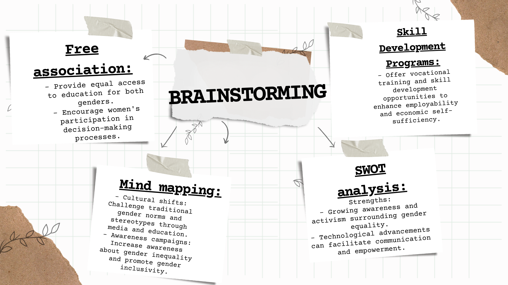

Solutions
Our group may list down as many solutions we can think of. Based on our evaluation using the different techniques, we identified one that our group will focus on

List of Solutions
Based on the evaluation using the different brainstorming techniques, our group has identified one solution that we will focus on: Healthcare Access Improvement: - Enhance healthcare services and accessibility to improve overall community well-being. Cost-effectiveness: - Analyze the potential costs and benefits of each solution and determine which one provides the best value for money. Feasibility: - Assess the practicality and achievability of each solution considering available resources, technological capabilities, and political support. Impact assessment: - Evaluate the potential environmental, social, and economic impact of each solution to determine its effectiveness in addressing pollution. Public acceptance: - Consider public perception and willingness to engage with each solution to ensure support and active participation. Long-term sustainability: - Evaluate the long-term viability and sustainability of each solution to ensure long-lasting positive effects.
Identified Solution
Idea generation: Gather a diverse group of individuals and encourage them to produce as many ideas as possible. Compile a list of all potential solutions without making judgments. - Expert opinions: Consult experts or individuals with relevant expertise in the topic. Gather their opinions and insights to gain a deeper understanding of the advantages and disadvantages of each solution. - Brainstorming: Gather a diverse group of individuals and encourage them to generate as many ideas as possible. List all the potential solutions without judgment.